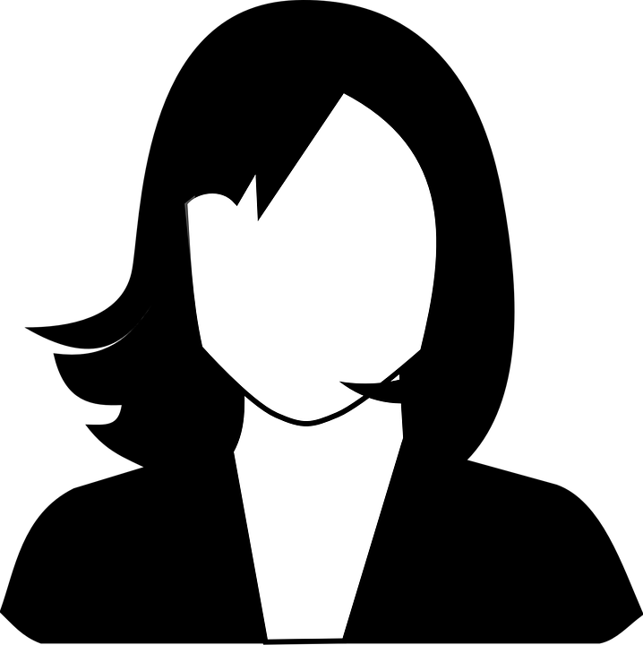

Statistik och dataanalys I, 15 hp
Data finns numera överallt i samhället. Kursen Statistik och dataanalys I ger dig grunderna för att förstå och använda data, både som samhällsmedborgare och som avancerad dataanalytiker.
Kursen ger dig en översikt av metoder för statistisk dataanalys och dess många tillämpningar. En introduktion till dataanalys följs av praktisk datahantering i det populära statistiska programspråket R. Samband mellan variabler analyseras, och du tränas i hur statistiska modeller kan användas för att förutsäga nya data. Slutsatser från data är alltid osäkra och en viktig del av kursen är därför sannolikhetsberäkningar. Sannolikhetsteorin används sedan i de inferensmetoder som gör det möjligt att dra korrekta slutsatser från data och fatta optimala beslut under osäkerhet.
Du lär dig att utföra dataanalyser i praktiken, bl a genom datorlaborationer och två inlämningsuppgifter, men kursen ger dig även en kritisk blick på statistik som gör att du kan ifrågasätta, tolka och söka ny information för att bättre svara på olika frågeställningar.
Kursen består av två delar:
- Dataanalys och regression, 7.5 hp. I det här momentet ingår insamling, bearbetning, visualisering och sammanfattning av data i programspråket R. En stor del av momentet behandlar sambands- och regressionsanalys som utmynnar i metoder för prediktion.
- Sannolikhetsmodeller och inferens, 7.5 hp. I kursens andra momentet behandlas sannolikheter, slumpvariabler och sannolikhetsfördelningar. En central del i momentet är inferens, dvs. statistiska metoder för att dra slutsatser om olika fenomen från data. Kursen avslutas med en introduktion till beslutsfattade under osäkerhet.
Kurslitteratur
- De Veaux, R., Velleman, P. och Bock, D. (2021). Stats: Data and Models, 5:e upplagan, Pearson Global Edition, ISBN 9781292362212. Boken förkortas SDM nedan. Boken finns att köpa som fysisk bok på Akademibokhandeln Frescati eller City, eller online på Adlibris och Bokus. En digital version finns att köpa här.
- Ytterligare kompletterande material som delas ut under kursens gång.
Kursstruktur
Kursen består av föreläsningar, räkneövningar och datorlaborationer. Se respektive del av kursen för detaljer: Dataanalys och regression, 7.5 hp. och Sannolikhetsmodeller och inferens, 7.5 hp..
Schema
Kursens schema finns på TimeEdit. Ett tips är att välja Prenumerera i övre högra hörnet på TimeEdit och sen klistra in länken i ditt kalenderprogram på mobilen.
Formel- och tabellsamlingar
- Formel- och tabellsamling innehåller de flesta av kursens formler och tabeller och kommer att delas ut under salstentamen.
- Tabellsamling är en webb-version av tabellerna i Formel- och tabellsamling.
Interaktivt material
På vissa delar av kursen använder vi interaktivt material för att underlätta lärandet. De interaktiva applikationerna kommer vara länkade från föreläsningsslides och under respektive föreläsning. En sida med alla applikationer finns här.
Lärare
Mattias Villani
Kursansvarig och Föreläsare
Professor

Matias Quiroz
Föreläsare
Universitetslektor

Mona Sfaxi
Övningar, Datorövningar och Jour
Masterexamen i Statistik
Jon Lachmann
Datorövningar
Masterexamen i Statistik
Gamla tentor med lösningar
- 2023-02-10 [Obs! visas inte för studenter!]